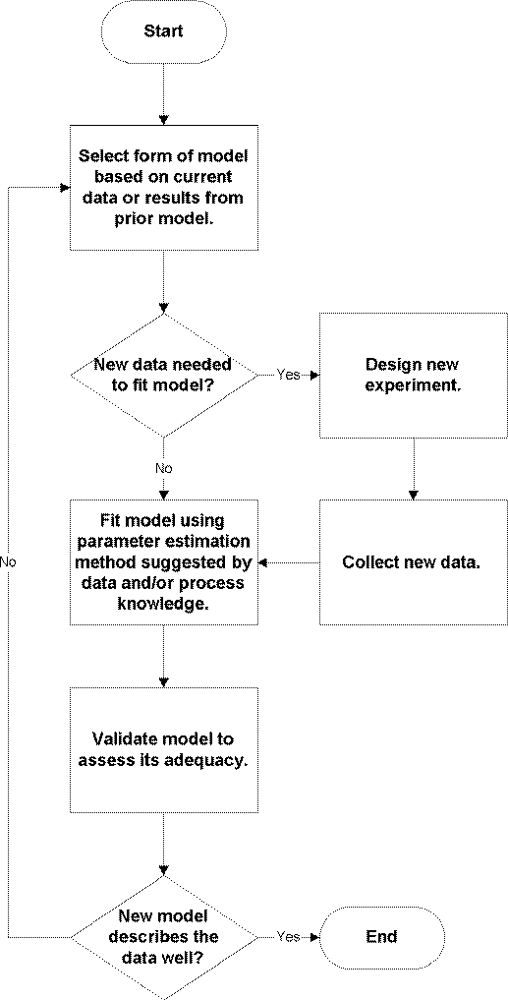

4.
Process Modeling
4.4.
Data Analysis for Process Modeling
4.4.1.
|
What are the basic steps for developing an effective process model?
|
|
|
Basic Steps Provide Universal Framework
|
The basic steps used for model-building are the same across all modeling
methods. The details vary somewhat from method to method, but an understanding
of the common steps, combined with the typical
underlying assumptions needed for the
analysis, provides a framework in which the results from almost any method can
be interpreted and understood.
|
|
Basic Steps of Model Building
|
The basic steps of the model-building process are:
- model selection
- model fitting, and
- model validation.
These three basic steps are used iteratively until an appropriate model for
the data has been developed. In the model selection step, plots of the data,
process knowledge and assumptions about the process are used to determine the
form of the model to be fit to the data. Then, using the selected model and
possibly information about the data, an appropriate model-fitting method
is used to estimate the unknown parameters in the model. When the parameter
estimates have been made, the model is then carefully assessed to see if the
underlying assumptions of the analysis appear plausible. If the assumptions
seem valid, the model can be used to answer the scientific or engineering questions
that prompted the modeling effort. If the model validation identifies problems
with the current model, however, then the modeling process is repeated using
information from the model validation step to select and/or fit an improved
model.
|
|
A Variation on the Basic Steps
|
The three basic steps of process modeling described in the paragraph above
assume that the data have already been collected and that the same data set
can be used to fit all of the candidate models. Although this is often the case in
model-building situations, one variation on the basic model-building
sequence comes up when additional data are needed to fit a newly hypothesized
model based on a model fit to the initial data. In this case two additional
steps, experimental design and data collection,
can be added to the basic sequence between model selection and model-fitting.
The flow chart below shows the basic model-fitting sequence with the
integration of the related data collection steps into the model-building
process.
|
|
Model Building Sequence
|

|
|
|
Examples illustrating the model-building sequence in real applications can
be found in the case studies in Section 4.6.
The specific tools and techniques used in the basic model-building steps are
described in the remainder of this section.
|
|
Design of Initial Experiment
|
Of course, considering the model selection and fitting before collecting the
initial data is also a good idea. Without data in hand, a hypothesis about
what the data will look like is needed in order to guess what the initial
model should be. Hypothesizing the outcome of an experiment is not always
possible, of course, but efforts made in the earliest stages of a project
often maximize the efficiency of the whole model-building process and result
in the best possible models for the process. More details about experimental
design can be found in Section 4.3 and in
Chapter 5: Process Improvement.
|